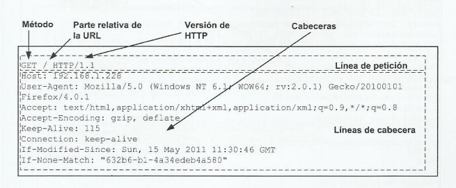
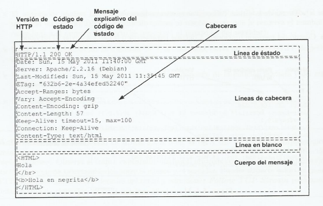
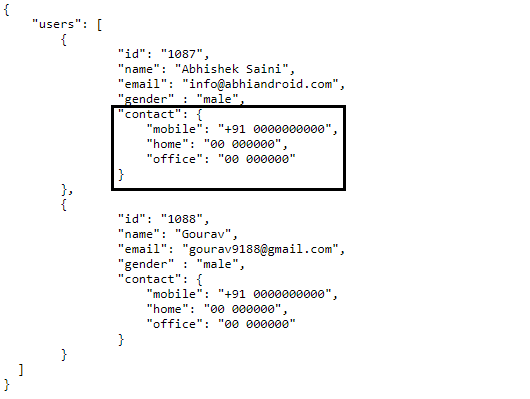

Conceptos
HTTP
HTTP son las siglas corresponientes a HyperText Transfer Protocol. Es un protocolo de comunicación en la Web.
Es un protocolo sin estado que utiliza TCP como protocolo de transporte y determina los tipos de peticiones que los clientes pueden enviar, así como el formato y estructura de las respuestas.
Los mensajes de petición están formados por una línea inicial de petición que incluye el método utilizado la parte relativa de la URL y la versión de HTTP; unas líneas de cabecera, una línea en blanco y, por último, el cuerpo del mensaje con los parámetros o fichero para enviar al servidor.
Los mensajes de respuesta están formados por una línea inicial de respuesta o de estado que incluye la versión de HTTP, un código de estado y un mensaje explicativo del código de estado; unas líneas de cabecera, una línea en blanco y, por último, el cuerpo del mensaje, determinado por el tipo de recursos solicitado.
API REST
Una API (Application Programming Interface) es un conjunto de reglas que definen cómo pueden conectarse y comunicarse entre sí, diferentes aplicaciones o dispositivos. Una API REST es una API que cumple los principios de diseño del estilo de la arquitectura REST y sigue la estructura Cliente-Servidor.

POSTMAN
Postman es una herramienta que nos permite realizar pruebas API. Es un cliente HTTP que nos da la posibilidad de testear 'HTTP requests' a través de una interfaz gráfica de usuario, por medio de la cual obtendremos diferentes tipos de respuesta que posteriormente deberán ser validados.

JSON
JSON (JavaScript Object Notation) es un formato ligero de texto plano y con estructura jerárquica que se utiliza para guardar e intercambiar información que cualquier persona pueda leer. Es una alternativa más simple y liviana al XML.
